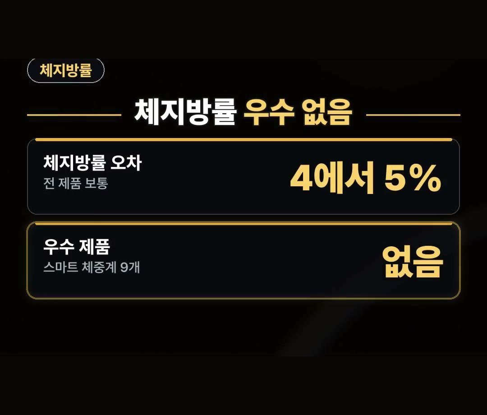
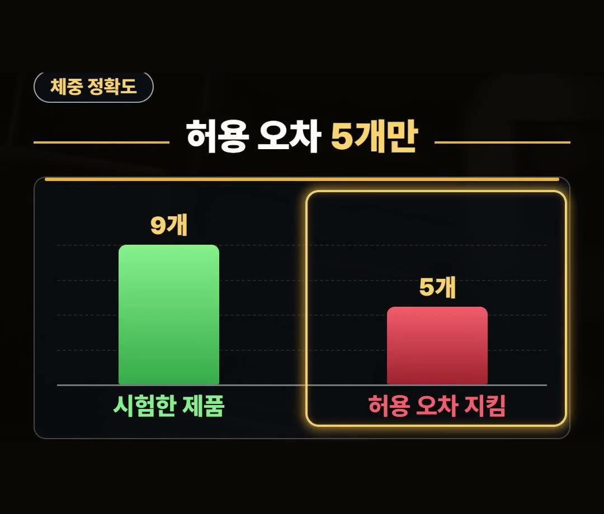
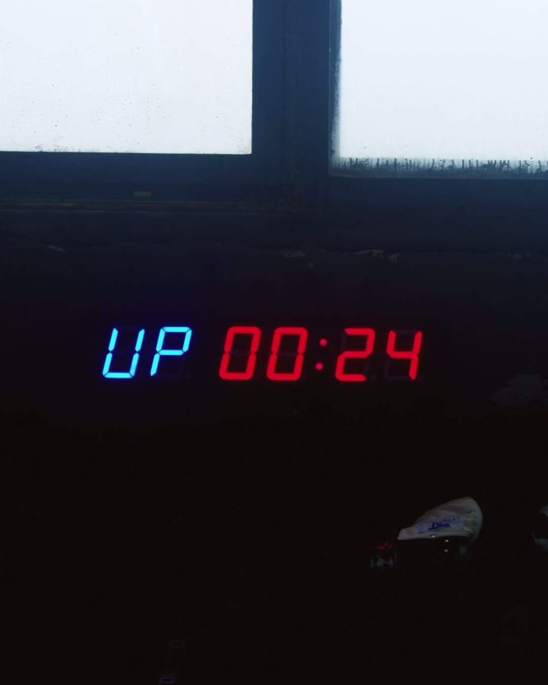
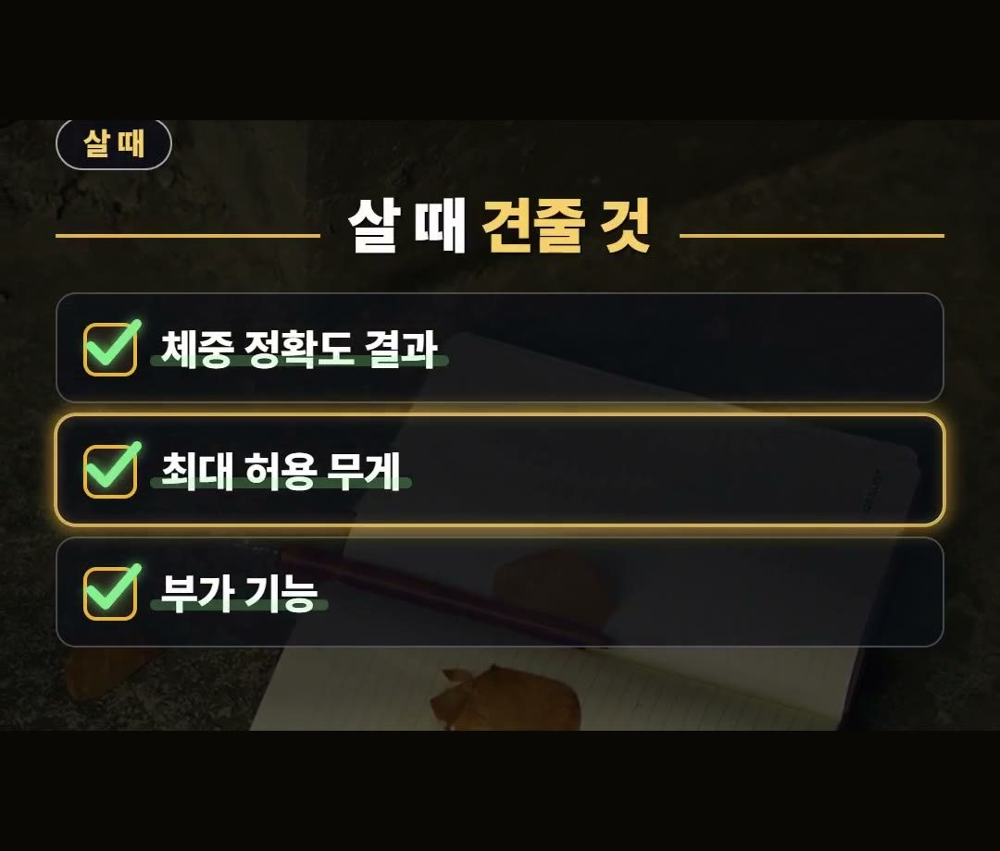
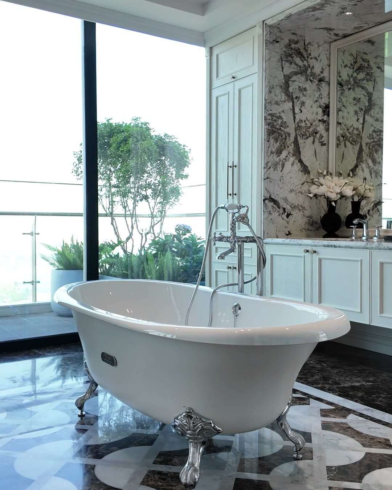

체중계 추천, 체지방 숫자만 믿고 사면 후회하는 이유
※ 이 글에는 제휴 링크가 포함되어 있으며, 링크를 통해 구매하시면 일정 수수료를 받을 수 있습니다. (가격은 같습니다)
※ 이 포스팅은 쿠팡 파트너스 활동의 일환으로, 이에 따른 일정액의 수수료를 제공받습니다.
※ 이 콘텐츠는 토스쇼핑 쉐어링크 활동의 일환으로, 링크를 통한 구매가 발생하면 일정 수수료를 지급받습니다.
선선한 가을이 되면서 운동이나 식단을 다시 시작하려고 새 체중계를 알아보고 계신가요?
체중계를 바꾸기 전에 꼭 알아 둘 시험 결과가 있어요.
2023년 한국소비자원이 스마트 체중계 9개를 시험한 결과입니다.
이 글에서는 그 시험에서 나온 체지방률·체중 정확도 결과와, 체중계 비교할 때 견줄 점을 정리했어요.
2023년 한국소비자원 시험에서 스마트 체중계 9개 가운데 체지방률이 우수한 제품은 없었어요.
근육이 많은 체형은 의료기기보다 최대 10% 이상 차이 날 수 있으니, 체지방 숫자는 참고만 하세요! ⚖

한국소비자원은 어떻게 시험했나요
이 결과는 2023년 한국소비자원이 스마트 체중계 9개를 두고 비교한 시험에서 나왔어요.
시험은 크게 두 가지로 나뉩니다.
- 체지방률: 정밀 측정이 가능한 의료기기의 값과 체중계 값의 차이를 확인
- 체중: 표준 무게를 체중계에 올리고 표시되는 무게 값의 차이를 확인
즉 체지방은 의료기기와, 몸무게는 정해진 표준 무게와 견줘 본 것이에요.
아래에서 두 결과를 하나씩 살펴볼게요.
스마트 체중계면 체지방도 정확할까요?
스마트 체중계라면 체지방도 정확하게 재 줄 거라고 믿기 쉽죠.
그런데 2023년 한국소비자원 시험 결과는 달랐어요.
스마트 체중계 9개 가운데 체지방률이 우수한 제품은 없었습니다.
전 제품의 오차가 4에서 5% 범위로, 「보통」 수준이었어요.
- 체지방률 우수 제품: 없음
- 전 제품 오차: 4~5% 범위
- 평가: 보통
체지방 숫자가 조금씩 달라 보여도 너무 걱정하지 말고 참고용으로 보시면 됩니다.

체중 정확도는 9개 중 5개만 우수
체중은 20kg, 40kg, 100kg 표준 무게를 체중계에 올려서 쟀어요.
그 결과 9개 중 5개만 한국산업표준 허용 오차를 지켜 「우수」 였습니다.
- 시험한 제품: 9개
- 허용 오차를 지킨 제품: 5개
같은 스마트 체중계라도 몸무게 정확도가 제품마다 다르다는 뜻이에요.
그래서 체중계 추천 글을 볼 때도 체중 정확도 결과를 먼저 보는 게 좋습니다.


근육이 많은 체형이라면 이것부터
근육이 많은 체형이면 의료기기보다 최대 10% 이상 차이 날 수 있다고 해요.
그래서 체지방률은 참고 용도로 쓰는 게 좋습니다.
체지방을 정밀하게 보려는 목적이라면 스마트 체중계는 사지 않는 게 낫습니다.
이런 분은 체지방 숫자 하나에 기대지 말고 참고만 해 주세요.
가정용 체중계 추천, 이런 집에 잘 맞아요
몸무게 기록이 목적인 집이라면 스마트 체중계가 잘 맞아요.
가정용 체중계를 고를 때 볼 점을 정리했습니다.
- 체중 정확도 결과
- 최대 허용 무게
- 부가 기능
한국소비자원도 제품마다 부가 기능과 최대 허용 무게에 차이가 있어 고를 때 꼼꼼히 확인할 필요가 있다고 했어요.
부가 기능은 사용자 자동 식별이나 유아·반려동물 체중 측정처럼 제품마다 다르니, 우리 집에 필요한 기능이 있는지 살펴보세요.

이런 제품도 있어요.
상품 설명에 따르면 유에스비 충전식 디지털 스마트 체중계라고 합니다.
체중계 비교를 할 때는 위에서 정리한 체중 정확도 결과, 최대 허용 무게, 부가 기능을 상품 설명에서 하나씩 확인해 보세요.

정리
- 2023년 한국소비자원 시험에서 스마트 체중계 9개 중 체지방률 우수 제품은 없었고, 전 제품 오차가 4~5% 범위(보통)였어요.
- 체중은 9개 중 5개만 한국산업표준 허용 오차를 지켰고, 근육이 많은 체형은 체지방이 의료기기보다 최대 10% 이상 차이 날 수 있어요.
- 살 때는 체중 정확도 결과, 최대 허용 무게, 부가 기능을 견줘 보세요.
여러분은 체중계에서 몸무게와 체지방 가운데 어떤 숫자를 더 자주 보세요?
링크는 아래에 모아 두었어요.
📌 2026년 10월 기준 정보예요. 가격은 시기에 따라 달라질 수 있어요.
· 한국소비자원 비교공감 「스마트 체중계」 (2023.12.14)
· 대한민국 정책브리핑 「스마트 체중계 9개 제품 비교정보 제공」 (2023.12.14)
· korea.kr
사진·영상사진·영상: Pexels (Artem Podrez, Cá Bảo, Erika Browne, Fernanda Neitzel, Kindel Media, Pavel Danilyuk)